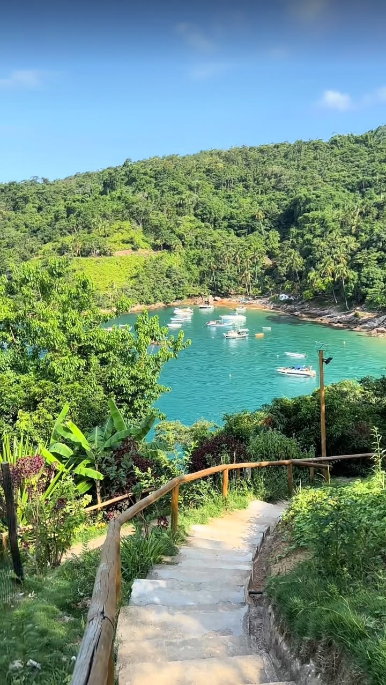
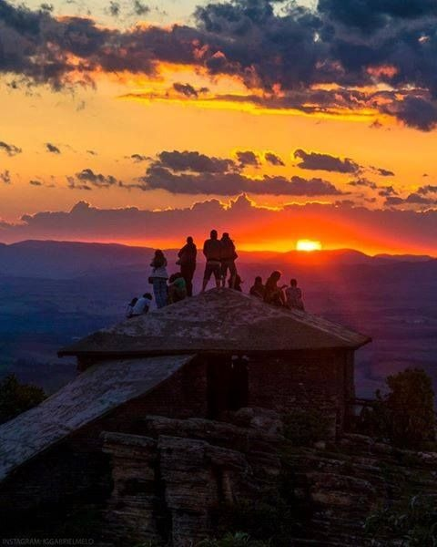
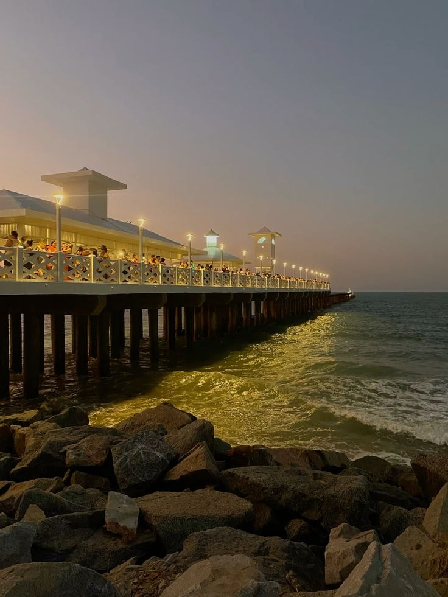
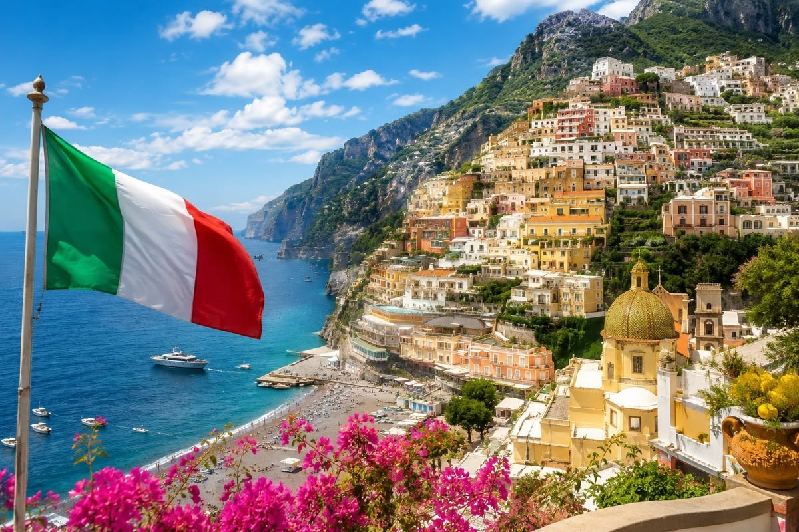
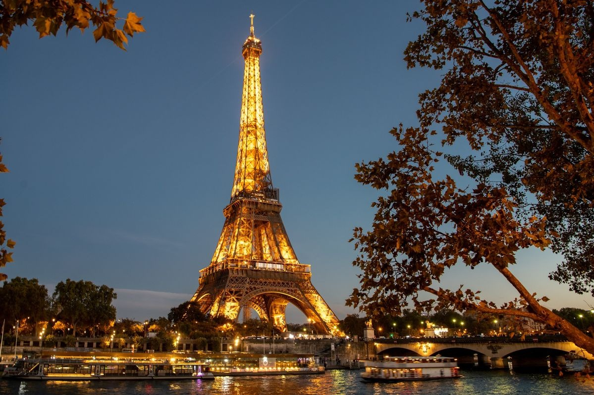

O peso das palavras
Sou completamente apaixonada por leitura e pelo poder que as histórias têm de nos transportar para outros mundos.
Entre códigos, livros e novas descobertas, este é um pequeno espaço dedicado a tudo aquilo que faz parte de quem eu sou.

Meu nome é Stella e atualmente sou estudante de Desenvolvimento de Sistemas no Instituto J&F.
Se você quiser me entender de verdade, basta olhar para o equilíbrio do meu dia a dia: de um lado, a lógica exata dos códigos e da tecnologia; do outro, uma pilha de livros e uma mente que não cansa de buscar novas histórias.
Me considero uma pessoa criativa, dedicada e movida pela curiosidade.
Sou completamente apaixonada por leitura e pelo poder que as histórias têm de nos transportar para outros mundos.
Tenho um interesse profundo por tudo que envolve a mente, o comportamento e a psicologia humana.
Minha fé é uma parte fundamental de quem eu sou e guia meus valores diários.
Minhas flores favoritas são tulipas e margaridas.
Meu nome vem do latim e significa estrela. Gosto de carregar esse significado comigo.
Algumas histórias permanecem conosco muito depois de terminarmos a última página. Aqui estão alguns dos livros que marcaram minha trajetória como leitora.

Autor: Rebecca Carvalho
Em Olinda, os netos de duas padarias rivais precisam se unir para salvar o negócio da família da falência e acabam se apaixonando no processo.
Ler minha resenha
Autor: Fiódor Dostoiévski
Um sonhador solitário conhece uma jovem encantadora e se apaixona por ela, mas a história se desenrola de maneira inesperada, explorando os desafios e complexidades dos relacionamentos amorosos.
Ler minha resenha
Autor: Paula Pimenta
A história acompanha a vidade uma jovem que se muda para Londres e se envolve em uma série de aventuras, descobrindo o amor, a amizade e a importância de seguir seus sonhos.
Ler minha resenhaSimplesmente perfeito, esse livro é extremamente divertido e leve, e o romance... Nem se fala, impecável!. Esse livro me fez sentir vontade de cozinhar, de ir pra Olinda, de me apaixonar, e de seguir meus sonhos. Amo livros nacionais e não tinha como eu não favoritar essa pérola. Ao decorrer do livro você se conecta com a história e com os personagens, e sente como se estivesse presenciando tudo ao vivo, eu DEVOREI esse livro, e não queria parar de ler nunca mais. Quando acabou, chorei pelo fim, queria mais dessa história tão doce e salgada.🤍🧡
Uma das obras mais clássicas do autor renomado Fiódor Dostoiévski retrata, de maneira atemporal, a diversidade de interpretações e sentimentos que as pessoas vivenciam em relacionamentos amorosos. Conhecemos na história um solitário sonhador, que vive triste e frustrado, e que conhece a graciosa e encantadora Nastienka. Os diferentes pontos de vista tornam a narrativa cada vez mais interessante, visto que, enquanto o sonhador se apaixona cada vez mais pela bela moça, ela busca nele consolo e conforto em seu momento de tragédia. Esse conjunto de acontecimentos nos faz refletir sobre como os relacionamentos são complicados e como, muitas vezes, apostamos nossas fichas em pessoas que talvez não estejam tão engajadas quanto imaginávamos. Nastienka continua sua vida como se nada tivesse acontecido e passa a viver nos braços de seu antigo e agora atual amado. Por outro lado, o sonhador permanece em uma vida solitária e agora também insegura.
Eu não consigo encontrar palavras pra descrever o TANTO que eu sou apaixonada por essa história..a Paula pimenta representa tão bem os personagens e seus sentimentos que eu senti como se eles fossem meus melhores amigos!.Extremamente divertido e inspirador, eu depois de ler esse livro me encontro em uma total crise por essa história não estar acontecendo de verdade, eu amei Muito. Dica pra vida de vocês, apenas leiam os livros da Paula pimenta!🎀💗

O lugar mais bonito que já visitei foi Ilhabela, aqui no Brasil. Fui com a companhia da minha família quando era pequena.

Também visitei São Tomé das Letras, em Minas Gerais.

Quando era bem pequena, fui com meus pais para o Ceará. Lá visitei grande parte da minha família paterna e revi pessoas muito importantes.

Quero conhecer sua cultura, história e diversidade.
Tenho fascínio por mitologia e história antiga.

Quero conhecer a cultura local e praticar a língua francesa.
Quero conhecer a neve e descobrir as particularidades da cultura canadense.
Um espaço para reunir poemas, pensamentos e palavras que escrevi ao longo do tempo.
Desde que parei de comer mexericas, sinto a falta delas. Depois que desapareceram, como um suspiro de vida da minha rotina, sinto que nada mais tem sentido; me sinto só, me sinto sem algo doce para admirar e saborear, sem algo que posso ter em minha posse, sem algo para saciar minha sede. Penso em comer uvas, laranjas e maçãs, mas nada se compara às mexericas que antes estavam aqui. E por que não estão mais? Por que devo viver sem elas em minha vida? Eu sequer tinha essa escolha? Muitas dúvidas assombram meus pensamentos, e muitas lembranças os iluminam, uma luz tão forte que ofusca meus sensos de lógica: alucinantes, envolventes lembranças que insistem em tirar minha paz, em tirar o meu sono, e não anulam a minha fome... meu desejo. Apesar do tempo passado, sua ausência ainda ocupa parte do meu estômago, e, no fundo do meu âmago, sinto o pesar de sua ausência... Espero que um dia a mexerica volte,e, se não voltar, não prometo me contentar com laranjas.
"A vida é curta demais para ser gasta fomentando animosidade ou remoendo erros."
Anne de Green Gables